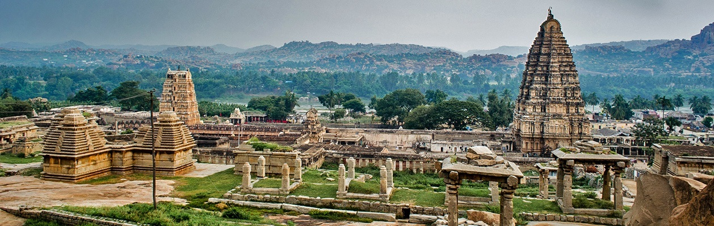

NAME : hampi

Historical & Heritage
At a distance of 13 km from Hospet, 64 km from Bellary, 104 km from Gadag, 1
60 km from Hubli, 340 km from Bangalore & 377 km from Hyderabad, Hampi is an ancient village situated on the banks of Tungabhadra River in northern Karnataka. Hampi is a renowned UNESCO World Heritage Site. The village stands within the ruins of the city of Vijayanagara, the former capital of the Vijayanagara Em
pire. It is one of the top destinations of Karnataka Tourism and also one of the best heritage sites in India.

HOW TO REACH ?
Nearest Airport:kaliguram airport
Nearest Railway Station: kailguram raiway station
Nearest Bus Stand: kailguram bus stand